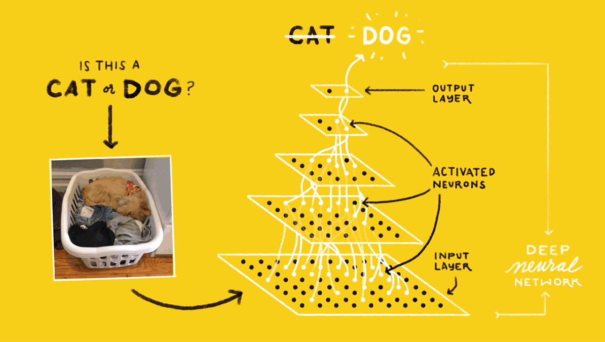
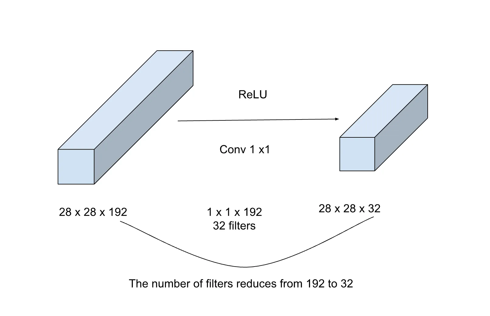
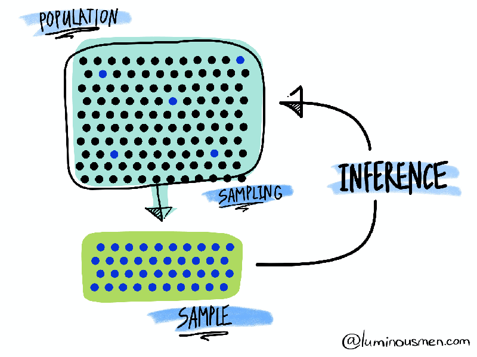
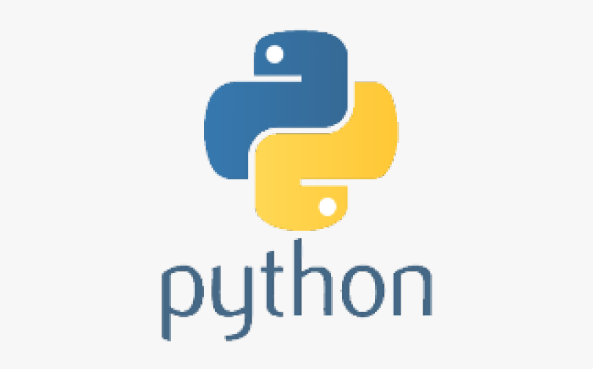

Tutorials & notebooks
Walkthroughs and cookbooks from things I have worked through hands-on.

AI Agents Explained
A workflow follows a fixed path, while an agent decides its own next step. Includes the patterns in between and how to keep agents safe with limited permissions and human checkpoints.
Read the piece →
Retrieval Augmented Generation
Language models only know what they were trained on. Retrieval augmented generation gives a model access to your own data. Here is how it works and when to choose it over fine tuning.
Read the piece →
Prompt Engineering
The basics of writing and refining prompts to get better results from large language models, along with the popular techniques researchers and developers use.
Read the piece →
Generative AI
Generative AI can seem complex, but it does not have to be. Explained in simple terms for anyone, whatever their technical background.
Read the piece →LLMs Demystified
A language model predicts the next word in a sequence. Scaled up, the same idea powers large language models, built on transformers and available in three main types.
Read the piece →
Vision Transformers
A deep dive into Vision Transformers (ViTs), the approach reshaping computer vision, explaining the steps involved in an object classification task using ViTs.
Read the piece →
Introduction to Deep Learning
A detailed cookbook on how to create a basic deep neural network (DNN) and a basic convolutional neural network (CNN) using Keras and the MNIST dataset. Also includes a basic TensorFlow tutorial and data augmentation.
View on GitHub →
1x1 Convolution Explainer
Understanding the concept of the 1x1 convolution operation, which appeared in the paper "Network in Network" by Lin et al. (2013) and "Going Deeper with Convolutions" by Szegedy et al. (2014), which proposed the GoogLeNet architecture.
Read the piece →
Hypothesis Testing
Many of us get scared by the term hypothesis testing and are unsure which test to use for a specific type of problem. This repository is an attempt to address that and help understand when to apply a specific type of test.
View on GitHub →
Introduction to Python
When I started learning Python, I used to get lost in what concepts to learn, especially coming from a non-programming background. This repository helps learners from a non-CS background know which key Python concepts matter for data science and machine learning projects.
View on GitHub →Bokeh Tutorial
A beginner's guide to Bokeh, introducing a fun analogy of how building your first Bokeh plot is like building a house — then exploring widgets, combining multiple plots, and eventually hosting an interactive Bokeh application.
View on GitHub →